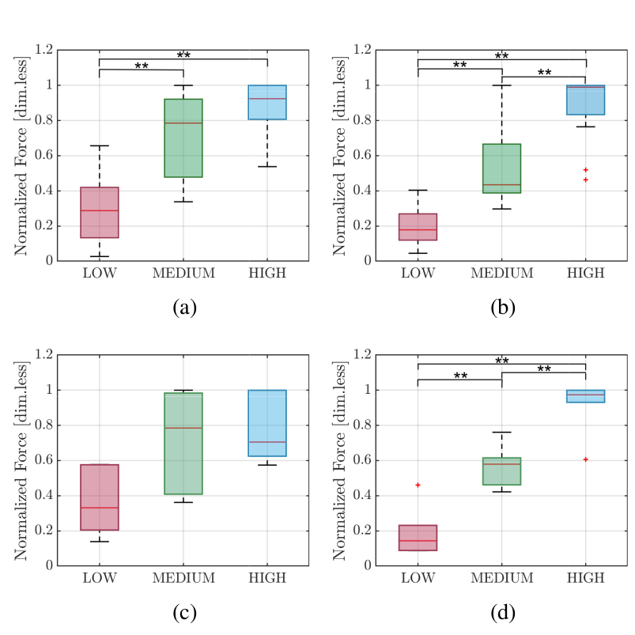

Overview
Accurate grip force regulation remains a major challenge in sEMG-driven robotic hand control due to uncertainties in human intent estimation, robotic actuation, and object interaction. This work introduces a probabilistic shared autonomy framework based on Hidden Markov Models trained on tactile data to infer grasping phases and dynamically adjust control authority.
Key Contributions
- Probabilistic modeling of grasping phases using Hidden Markov Models.
- Shared autonomy strategy for smooth grip force regulation.
- Validation with 20 intact-limb participants and one amputee participant.
- Evaluation on anthropomorphic and industrial robotic hands.
Results
The proposed shared autonomy architecture improves grip force regulation, reducing variability and enabling more consistent control across participants and object interactions.

Recipe Preparation Experiment. First row: boxplot of normalized grip strength values (LOW, MEDIUM, and HIGH) for (a) the constant-gain and (b) the 3-state shared autonomy architecture for the experiments performed by intact-limb participants. Second row: boxplot of normalized grip strength values for the experiments performed by the participant with amputation ((c): constant-gain architecture, (d): shared autonomy architecture). Symbol “**” indicates a statistically significant difference.